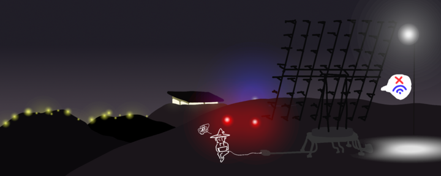
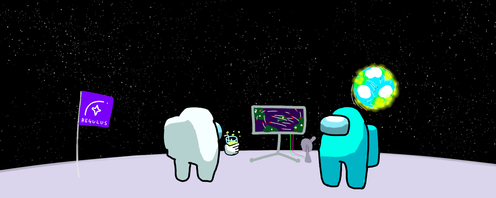
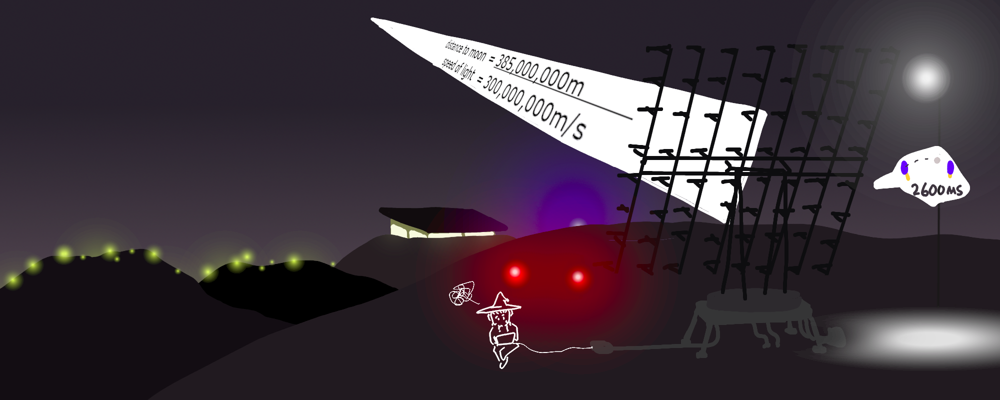
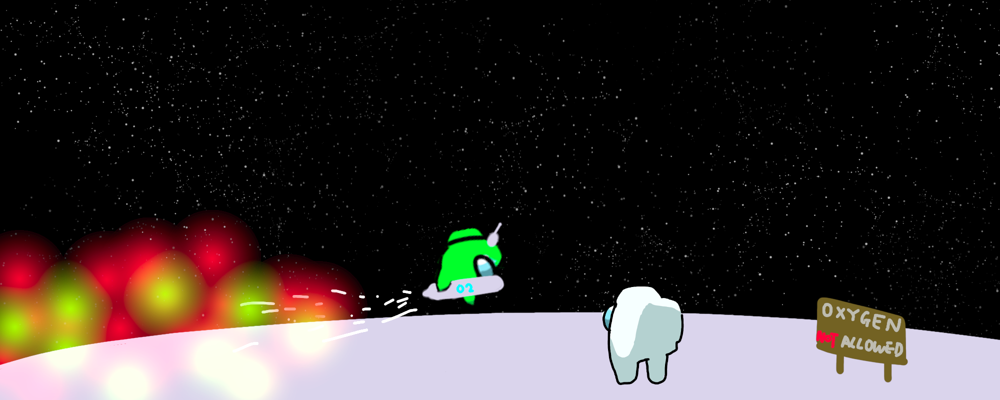

Welcome to REGULUS - [REGU]lated [LU]nar [S]torage¶
Story
Just for fun, no project-relevant content on this page.
{kind=link}
REGULUS is the world’s first beyond-cloud storage service provided by Caltopia Cloud Services (CCS). By literally moving your data out of the earth, REGULUS meets a high bar of performance required by the most demanding workloads. Read our SLA and privacy policy below for more details:
REGULUS Service Level Agreement
Availability
{kind=link}
REGULUS guarantees availability when line of sight can be established between you and the moon. Requests to REGULUS may be processed when line of sight is unavailable depending on the availability of uplink proxies around the globe and conditions of the ionosphere.
We guarantee 0-60% uptime depending on the time of month, cloud cover and occurance of solar flares.
Durability
{kind=link}
We guarantee 100% data durability. REGULUS is able to retain your data even in natural and artificial disasters up to and including global thermonuclear war. However, data durability may be compromised in event of a second space race.
Latency
{kind=link}
Due to speed of light constraints, REGULUS has minimum network RTT of 2,600ms. (speed of light = 300,000,000m/s. distance to moon = 385,000,000m.) Imagine living on the moon, playing any sort of online game must be a pain.
Data Airgap + Firewall
{kind=link}
Data stored in REGULUS is well airgapped with 385,000 km of vaccum. As a side effect, REGULUS is extremely well guarded against fires due to lack of oxygen in its premises. Any fires that do break out will be extinguished in 12 hours when REGULUS is no longer exposed to sunlight and temperature drops to below freezing.
Closing Remarks
We hope you enjoy using our lunar data storage, and we certainly hope no one tries securely storing data on our insecure systems using their cryptography knowledge from a computer security class.